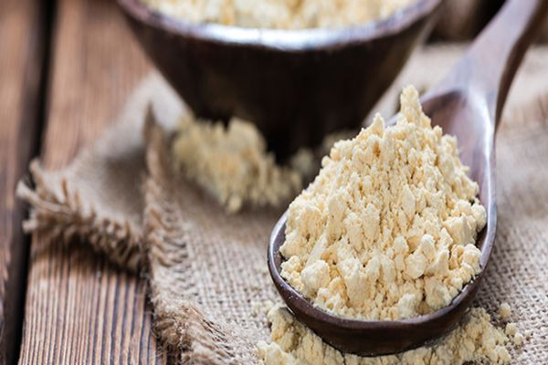

Back to Products
Organic Soybean Meal

Soybean meal is the dominant protein supplement used in livestock, aqua, poultry diets and is the standard to which alternative protein sources are compared. It is widely used as a filler and source of protein in animal diet including pig, chicken, cattle, horse, sheep, and fish feed.
Soybean meal is the by-product of the extraction of soybean oil. The oil may be removed by solvent extraction or by an expeller process in which the beans are heated and squeezed. Most commercial feeds use solvent-extracted soybean meal. Only mechanically extracted soybean meal can be used in organic poultry diets.
Soybean meal is by far the world's most widely used oilseed meal and protein concentrate in livestock, aqua, poultry feeds. Its popularity is based on its low price, its high protein quantity and quality (its amino acids are an excellent source of protein for feed industry) and its good availability.
Benefits
- • Energy & Protein in one ingredient.
- • Eliminates the need to add fat in poultry and dairy cattle feeds.
- • It increases fat digestibility, reduces viscosity in the intestine and decreases weight droppings.
| Protein | Min. 46 % ON AS IS |
| Moisture | 10 % Max |
| Oil | Max. 7% ON AS IS |
| Ureas Activity (pH unit rise) | 0.05-.1 % Max |
| KOH | 80% Min |